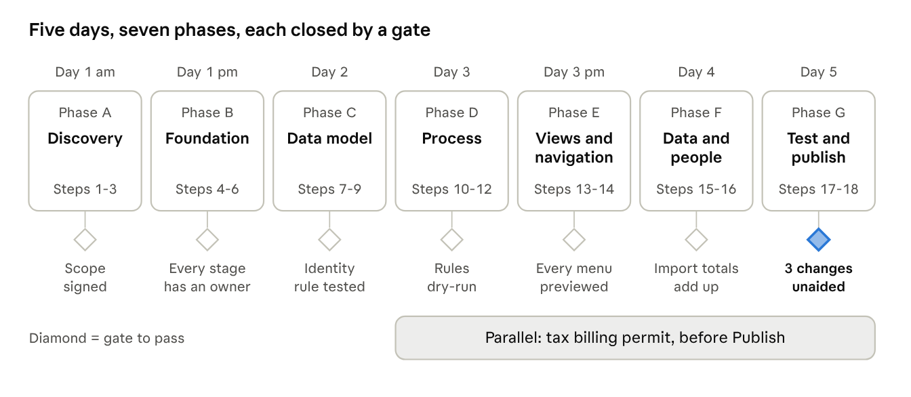
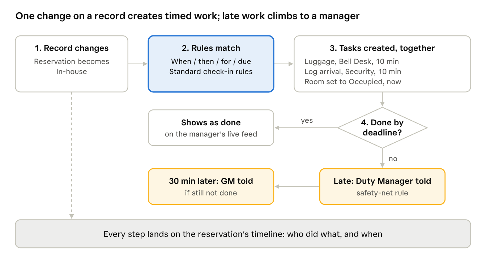

1M-CRM: Implementation Playbook
Version of 15 Nov 2026
Every client on 1M-CRM is set up the same way: in five working days, 18 steps turn the way a business already works into forms, departments, roles, stages, handoff rules and per-role screens. Nothing is coded per client. This playbook tells the team exactly what to do at each step, using Hotel Dhaulagiri Courtyard (52 rooms, 65 staff, Kathmandu) as the worked example and a trekking operator as proof that the method fits any business.
At a glance

Do not start a phase until the gate under the previous one is passed. Clients that issue tax bills also run the permit track from Day 3; Publish waits for it.
The building blocks
Every CRM we build is made of the same twelve pieces. Learn these words first; every step below configures one or more of them.
| Piece | What it is | Hotel example | Any-business example |
|---|---|---|---|
| Object | A kind of thing the business tracks | Guest, Reservation, Room, Folio ("Bill"), Task | Patient, Appointment; Customer, Order |
| Field | One piece of information on an object | Check-in date, ETA, WhatsApp number | Blood group; Delivery address |
| Record | One row of an object | Reservation R-2083-0917 for Ramesh Adhikari | Order #4410 |
| Identity rule | How the system knows two records are the same person or thing | Same phone, then email, then ID number | Same PAN; same company registration |
| Department (org unit) | A node in the organisation tree, nested to any depth | Hotel > Rooms Division > Front Office > Front Desk team | Head office > Region > Branch > Sales team |
| Role | A job inside a department | Front Desk Agent, Housekeeper | Branch Manager, Field Agent |
| Permission | What a role may view, add, edit, delete, which records, which fields, which stage moves | Housekeeper sees only own tasks; passport number hidden | Agent sees only own customers |
| Stage | A step in a workflow, owned by a department, with a form and a deadline | Enquiry > Held > Confirmed > Pre-arrival > In-house > Checked out | Lead > Quote > Won > Delivered |
| Rule | When X happens and these conditions hold, do these actions | When a reservation becomes In-house, create Luggage for Bell Desk, due in 10 min | When an order is Won, create Invoice for Accounts |
| Task | A piece of work a rule (or a person) creates for a role | Prepare room 304, due before 14:00 | Call customer back in 2 days |
| View | A saved filter shown as a table, board, calendar, timeline or dashboard | Arrivals today (table), Room status (board) | Overdue invoices (table) |
| Navigation | The short, flat menu each role sees | Housekeeper: My Work, My tasks, Room status | Field agent: My visits, Customers |
What we configure and what stays fixed
The rule that decides it: configurable where it is safe, fixed where law, money or capacity is involved.
| Configurable per client (Settings mode) | Fixed, the same for every client (purpose-built code) |
|---|---|
| Objects and fields, forms, departments, roles, stages, rules, tasks, views, navigation, pick-lists | Room inventory and bookings (no double sale), rates, folios, tax bills, payments, the audit log, AI drafts |
Why: Nepal's tax rules require bill software that cannot edit or delete a bill; bookings must be impossible to double-sell; money must be exact. A generic configurable store cannot promise those, so those parts are built once and shared. A non-hotel client keeps the same split: their bills, payments and audit log are fixed; everything about how their teams work is configured.
Five rules that never bend
- Every change is signed by a person: no shared logins, ever.
- Bills are never edited or deleted. Mistakes are fixed by a credit note or a cancellation with a reason.
- A person confirms every AI-drafted record. The AI only drafts.
- Staff phone screens: one main action, at most two taps, Nepali and English, no typing.
- The client admin must have hands on the keyboard during setup, or they will never own the system.
Who does what
There are two sets of roles, and confusing them is the most common reason a setup slips. Our team builds the CRM. The client's departments and roles are what the CRM is built for. Every step names one of each: a doer and a subject.
Our implementation team
| Role | Side | Owns steps | Time | Why they exist |
|---|---|---|---|---|
| Implementation Lead | Ours | 4-14, 17, 18 | 2.5 days | Does all the configuration, start to finish, so context is never handed off |
| Solution Consultant | Ours | 1-3 | 0.5 day | Runs discovery. On small clients the Lead wears this hat too |
| Migration Analyst | Ours | 15 | 0.5 day | Imports and de-duplicates history; bad work here is invisible until month three |
| Client Sponsor | Theirs (owner or GM) | 1, 18 | 2 hours | Signs scope on day one and go-live on day five |
| Client Admin | Theirs | 3, 6, 14, 16, 18 | 1 day | Inherits the system; must type during setup |
| Department Heads | Theirs | 2, 10, 12, 17 | 3 hours | Describe the real process and test it; they configure nothing |
Hotel example: Aashish Poudel (Lead and Consultant), Ritu Bhandari (Migration), Bikash Shrestha (GM, Sponsor), Sunita Karki (Front Office Manager, Client Admin), and the heads of Front Office, Housekeeping, Security and Accounts.
Effort for a mid-size client
About 3.5 person-days from us and 1.5 from the client, over five working days. The client's share is not optional. For a 52-room hotel with 65 staff the split held; a group with several properties adds about a day per extra property for steps 5, 11 and 16.
Working rules for our team
- One Lead per client from step 4 to step 18. No hand-offs between colleagues mid-build.
- All configuration happens in a sandbox. Nothing reaches staff until Publish (step 18).
- Every decision the client makes is written on the step's worksheet the same day, with who decided it.
- If a step needs a decision nobody in the room can make, write it on the open-questions list and keep going. Never guess.
Phase A: Discovery (Day 1 morning, steps 1-3)
No software is touched in Phase A. These three steps produce the decisions that steps 4-18 carry out; every hour skipped here costs three later. Bring printed worksheets (see Templates) and fill them in the room.
Step 1. Agree scope in writing (60 min)
Who: Solution Consultant with the Client Sponsor and Client Admin. Goal: a signed one-page scope that says what is in, what is phase two, and who inherits the system.
Ask these questions, in this order, and write the answers on the scope worksheet:
- What breaks today? Ask for incidents, not opinions: "When did a booking last get lost? What happened?"
- How will we know it worked in 90 days? Get numbers.
- Which work must the system run from day one?
- What is explicitly phase two? Name it and date it; never just refuse it.
- Does the client issue tax bills from this system? If yes, the billing permit track (Phase G) starts on Day 3.
- Who inherits the system? One named person, present for steps 3, 6, 14, 16 and 18.
- Go-live date. Pick a low-season, mid-week day.
Hotel example: pains were 3-4 minute manual guest entry, bookings on WhatsApp, phone and OTA with no sync, double bookings, tasks shouted between desks, VIP bookings living in the GM's phone. Success: check-in under 45 seconds, zero double bookings in 90 days, 80% of arrival-to-checkout tasks created automatically. Phase two: channel manager, restaurant POS, inventory, payroll, accounting ledger. Bills in scope: yes. Inherits: Sunita Karki. Go-live: Sunday 1 Nov 2026.
Done when: the Sponsor has signed, and phase-two items each have a target quarter. Common mistake: writing "everything the old system does". That is a scope of 300 menus. Ask what they actually used last week.
Step 2. Walk one real booking through the building (90 min)
Who: Solution Consultant with each Department Head, at their desk. Goal: every handoff and every delay in the real process, in the staff's own words.
Do not ask "describe your process"; that gets the ideal version. Pick one real transaction from last week and follow it desk to desk. At each desk ask:
- What did you physically do with this one?
- How did you find out it was your turn? (call, shout, paper, WhatsApp, walking past)
- How long did it wait before you acted?
- Who did you tell when you finished, and how?
- What goes wrong here most often?
Write one row per desk: desk, what happened, how they were told, delay, and "becomes rule or deadline". Walk to every desk, including the ones nobody mentions in the meeting room.
Hotel example: eight desks for one past stay. Two were found only by walking there: the bell desk and security were never told a guest had arrived. Those two rows became the Luggage and Log arrival rules.
Done when: every row has a "becomes" entry, and each department head has read their rows back. Common mistake: skipping the desks that "aren't really part of it" (security, porters, accounts).
Step 3. Name the things the business talks about (45 min)
Who: Implementation Lead with the Client Admin. Goal: the object list, with the words staff already say, in English and Nepali.
- List every noun from the step 2 walk: guest, booking, room, bill, job.
- For each, agree one name in English and one in Nepali. Use the staff's word, not ours: this hotel says "Bill", so the Folio object is labelled Bill.
- For each object, write how you recognise the same one twice (phone, email, ID number). This feeds the identity rule in step 8.
- Write the "deliberately absent" list: objects you will not create yet. Adding later is free; carrying them now costs training time.
Hotel example: Guest (अतिथि), Reservation "Booking" (बुकिङ), Room (कोठा), Folio "Bill" (बिल), Task "Jobs" (काम). Absent: Supplier, Campaign, Menu item.
Done when: every object has an English name, a Nepali name and a "recognised by". Common mistake: two departments using two words for the same thing. Pick one and write the other as a synonym on the sheet.
Phase B: Foundation (Day 1 afternoon, steps 4-6)
First contact with 1M-CRM. Everything from here happens in the sandbox, so mistakes cost nothing.
Step 4. Create the tenant and install a blueprint (10 min)
Who: Implementation Lead, in Platform mode (our team only; clients never see it). Goal: a working sandbox, right in shape and wrong in details.
- New tenant: client name, data region (Nepal data centre for any client that issues bills).
- Add each legal entity: registered name, PAN, VAT registered yes/no. Each legal entity gets its own bill number series. One company with a restaurant under a second PAN = two legal entities.
- Set the fiscal year (Nepal: mid-July to mid-July).
- Install the closest blueprint. Never start from blank unless no blueprint fits: editing is days, authoring is weeks.
- Give the Client Admin access.
Hotel example: tenant Hotel Dhaulagiri Courtyard; legal entity Dhaulagiri Courtyard Pvt. Ltd., PAN 609845213, VAT registered; fiscal year 2083/84; Hotel blueprint (5 objects, 8 stages, 12 rules, 9 views).
Done when: the sandbox opens with the blueprint's objects, stages and rules. Common mistake: a missing PAN. Bills cannot be issued without it, so stop and get it.
Step 5. Edit the department tree (20 min)
Who: Implementation Lead. Goal: a tree that matches the real organisation chart.
- Start from the blueprint's tree. Delete what the client does not have; deleting is faster and gives better structures than building from scratch.
- Nest only where it carries meaning: a separate manager, a separate queue of work, or a separate permission boundary. Depth is available, not required.
- For each unit record its type (property, division, department, team), its staff count, and which workflows it owns or inherits.
- Past five levels, add nothing without checking navigation (step 14): staff stop browsing and rely on their menu.
Workflows attach to any unit and relate to the parent's in one of four ways: inherit (take it unchanged), extend (add stages or rules, never remove), override (replace for this subtree, used rarely and on purpose), block (nothing applies). A group can mark a workflow mandatory (for example foreign-guest registration), and no descendant may override it.
Hotel example: Property > Rooms Division > Front Office > Reservations, Front Desk, Bell Desk teams; Housekeeping > Floors, Laundry; Food & Beverage > Restaurant, Kitchen; plus Security, Maintenance, Finance > Accounts, Sales, Management. 18 units, 4 levels. Spa, Concierge and Night Audit came with the blueprint and were deleted.
Done when: every staff member has exactly one home unit, and every unit that owns a stage is named. Common mistake: mirroring the payroll chart instead of how work flows. Ask "who gives this team its work?"
Step 6. Roles and what each may touch (45 min)
Who: Implementation Lead with the Client Admin typing. This is the setting they will change most often after we leave. Goal: every role with six permissions per object.
For each role, for each object, set:
| Permission | Question to ask |
|---|---|
| View | Should this role see these records at all? |
| Add | Do they create them? |
| Edit | Do they change them? |
| Delete | Almost always no. Only the GM and admin |
| Record scope | All records, own unit's, or only those assigned to them? |
| Field masks | Which fields are hidden or masked (ID numbers, prices)? |
| Allowed stage moves | Which stage changes may they make? |
Then check two things before moving on: every stage has at least one role allowed to move a record into it, and ID-document fields are visible only to roles with a legal need.
Hotel example: 11 roles. Guest ID numbers visible to 4 roles (Front Desk Agent, Duty Manager, GM, System Admin), masked for Reservations, Housekeeping and Accounts roles, hidden for Bell Desk, Security and F&B. The Front Desk Agent may move Enquiry > Held > Confirmed > In-house > Checked out; housekeepers see only their own tasks.
Done when: 1M-CRM's publish check shows no stage without an advancer. Common mistake: creating a role per person. A role is a job; three front desk agents share one role.
Phase C: Data model (Day 2, steps 7-9)
The objects, the rule that makes 1M-CRM a CRM rather than a form tool, and the page staff will look at forty times a day.
Step 7. Trim and rename the fields (90 min)
Who: Implementation Lead. Goal: each object carries only fields someone named in a workshop.
- Open each object from step 3. For every blueprint field ask: did anyone mention this on the walk or the scope sheet? If not, delete it.
- Rename fields to the agreed vocabulary, and give each a Nepali label.
- Add the client's own fields that came out of step 2 (hotel: WhatsApp number, ETA).
- For each field set: type (text, number, date, phone, money, pick-list, link to another object), required yes/no, privacy level, and whether it is searched often.
- Turn repeated choices into pick-lists (source channel, cancellation reason). One pick-list editor replaces dozens of setup screens in older systems.
- Check what can never change: a field's key locks once published. System fields on fixed objects (guest, reservation dates, money) cannot be deleted.
Hotel example: Reservation went from 22 blueprint fields to 16; six deleted (meal plan code, corporate code and others nobody used), WhatsApp number and ETA added. Source channel pick-list: Booking.com, Expedia, WhatsApp, Viber, Messenger, phone, walk-in, agency.
Done when: every field on every object can be traced to the scope sheet, the walk or the vocabulary sheet. Common mistake: keeping fields "just in case". Each one is a box a busy clerk must skip forty times a day.
Step 8. Set the identity rule (15 min, the highest-value step)
Who: Implementation Lead. Goal: the system recognises a returning customer automatically.
- List the reliable identifiers from step 3's "recognised by" column, strongest first.
- For each, choose how to compare: exact (after formatting phone numbers and lower-casing emails) or similar (names).
- Choose the action on a match: join the existing record, or queue the pair for a person to decide.
- Never auto-merge on a name match. Names are not identity: spellings vary and families share surnames. A missed duplicate is a small annoyance; a wrong merge blends two strangers' histories and is very hard to undo.
- Test with three samples: a true repeat, a family sharing one phone, and a common name with no phone.
Hotel example: 1) phone exact (formatted to +977) joins; 2) email exact joins; 3) ID number exact joins; 4) similar name and date of birth goes to review. Test: "Ramesh Adhikari, +977 9856-041237" matched on phone and joined his March 2025 stay.
Done when: all three test samples behave as expected. Common mistake: matching on name first because "everyone knows the regulars".
Step 9. Lay out the record page (45 min)
Who: Implementation Lead. Goal: the screen staff use most, filled in, not designed.
The frame is fixed for every client: details on the left, timeline in the centre, related records on the right, with the stage bar on top. You choose only what goes in each panel.
- Left: the fields people check at a glance (for the hotel: guest, dates, room, ETA, guests, source, rate, total, ID masked).
- Centre: the timeline shows everything that happened, newest at the bottom: messages, AI drafts and who confirmed them, stage changes, tasks done, payments.
- Right: linked records (bill, open tasks, past stays, preferences).
- Mark fields locked after a stage (hotel: check-in date and total, after Confirmed, editable only by the Duty Manager).
- Mark fields hidden until a stage (cancellation reason, only at Cancelled).
- Preview as every role. A masked field must show as masked for roles that may not see it.
Done when: the preview looks right for the busiest role and the most restricted role. Common mistake: putting every field in the left panel. If it is needed less than daily, it belongs further down or hidden until its stage.
Phase D: Process (Day 3, steps 10-12)
This is where the walk from step 2 becomes running work. Department heads sit in for steps 10 and 12. The next section, How to design a flow, gives the method in detail; these steps say when and who.
Step 10. Set the workflow stages (60 min)
Who: Implementation Lead with the Department Heads. Goal: a short list of stages, each owned by one department, with a form and a deadline.
- Start from the blueprint's stages. Remove any stage that nobody could describe on the walk.
- For each stage fill one row: stage name, owning department, form shown at this stage, deadline, roles allowed to move a record in.
- Add the side exits (cancelled, no-show, lost), each needing a reason from a pick-list.
- Check the publish rules: every stage has an owner, every stage has someone allowed to move into it, and no stage is a dead end.
- Stages are versioned. Changes go into a draft; staff keep the published version until Publish.
Hotel example:
| Stage | Owner | Deadline | Moved in by |
|---|---|---|---|
| Enquiry | Reservations or Front Desk | Reply in 2 h | Reservations Agent, Front Desk Agent |
| Held | Front Desk | Hold expires in 24 h | Reservations Agent, Front Desk Agent |
| Confirmed | Front Desk, then Accounts | Deposit invoice same day | Front Desk Agent, Duty Manager |
| Pre-arrival | Housekeeping | Room prepared and inspected before arrival | Automatic, 24 h before arrival |
| In-house | Front Desk | Check-in under 45 s | Front Desk Agent, Duty Manager |
| Checked out | Front Desk, then Accounts | Settled same day | Front Desk Agent, Duty Manager |
| Cancelled / No-show | Front Desk | Reason required | Duty Manager, GM (plus the agents) |
The 24-hour hold expiry is the single change that fixed this hotel's double bookings: before, a pencil mark in the diary never expired.
Done when: each Department Head reads their stages aloud and agrees.
Step 11. Capacity: stop things being sold twice (30 min)
Who: Implementation Lead with the client's accounts person. Goal: inventory the database itself protects.
Capacity is not a stage, so it is set separately and lives in the fixed part of 1M-CRM.
- Enter the types of thing sold (hotel: room types) and each unit (rooms with number and floor).
- Choose allocation: pooled (customer books a type, the exact unit is picked later) or named (customer books that exact unit).
- Overbooking: not allowed, or a tolerance per property.
- Hold expiry (hotel: 24 h).
- Prices: rate plans per type.
- Tax and bills: the VAT rule (13%, stored as data so a change needs no code), service charge line (off by default), bill number series per legal entity and fiscal year.
- Payment methods the client accepts (cash, card, Fonepay QR, eSewa, Khalti, bank), with their merchant IDs.
Hotel example: 52 rooms: 24 Standard (NPR 6,500 room only / 7,800 B&B), 18 Deluxe (9,500 / 11,000), 8 Premier (13,500 / 15,000) all pooled; 2 Courtyard Suites (22,000 / 24,000) named. Overbooking not allowed.
Non-hotel version: a clinic's doctor slots, a training company's seats, a rental firm's vehicles. Same screen, same database guarantee.
Step 12. Turn each handoff into a rule (60 min)
Who: Implementation Lead with the Department Heads. Goal: every handoff found on the walk runs by itself, with a deadline and an escalation.
- Take the step 2 worksheet. Every row marked "becomes rule" gets one rule.
- Write it as one sentence: When [event] and [condition] then [action] for [role or department] due [deadline].
- Read each rule aloud to the department head it lands on. If they can't confirm it in their own words, it is wrong.
- Add the two safety-net rules every client gets: late-task escalation, and expiry of anything that holds capacity.
- Mark tasks that must wait for another (inspect waits for clean).
- Dry-run each rule against a test record before saving.
Done when: every handoff row from the walk points at a rule, and the dry run shows the right tasks for the right roles. Common mistake: writing rules nobody asked for. Each rule must trace back to something a staff member said.
How to design a flow
A flow in 1M-CRM is always the same chain: a record changes, a rule matches, tasks are created for other departments, deadlines run, late tasks escalate, and every step lands on the record's timeline. Design every client's flows with the seven moves below, in order.

Swap the words and the chain is any business's: a won deal, a booked appointment or an approved order runs through the same four steps.
Move 1. Pick the record that carries the work
Every flow hangs off one main object: the thing whose life the business follows. Hotel: Reservation. Clinic: Appointment. Trading company: Order. Ask: "When this is finished, what is finished?"
Move 2. Draw the stages as the record's life, not as departments
- 4 to 7 stages. More than 7 means some are tasks, not stages.
- A stage is a state the record is in (Held, In-house), not an action someone does ("call guest"). Actions are tasks.
- Each stage has exactly one owning department, one form and one deadline.
- Side exits (cancelled, lost, no-show) always need a reason.
- Test: can a manager glance at the stage and know who is responsible right now? If not, split or rename it.
Move 3. Find the handoffs
A handoff is any moment work passes to another person or department. They come from the step 2 walk. Each one becomes a rule. Typical signs: "then I tell...", "they shout up the stairs", "we send a WhatsApp to...", "they find out when they walk past".
Move 4. Write each rule in one sentence
Use exactly this shape, and pick the trigger from the list 1M-CRM supports:
When [trigger] and [condition, optional] then [action] for [role or department] due [deadline] escalate to [role] after [time].
| Trigger type | Use it when | Hotel example |
|---|---|---|
| Record created | Something new arrives | A new reservation from WhatsApp creates an AI draft for review |
| Field changed | One value matters | Guest flagged VIP: notify Duty Manager, create Welcome amenity for F&B |
| Stage changed | The record moves on | Becomes In-house: Luggage for Bell Desk, Log arrival for Security, room set to Occupied |
| Time relative to a date field | Something must happen before or after a date | 24 h before check-in: Prepare room for Housekeeping, Confirm details for Front Desk |
| Schedule | Every day or week at a fixed time | Day end at 22:00 |
| Inbound message | A chat message arrives | WhatsApp text creates a draft booking |
| Manual | A person presses a button | Duty Manager asks for a deep clean |
Actions are: create a task, notify a role, set a field, move a stage, send a message.
Move 5. Give every task an owner and a clock
- Assign to a role or a department queue, never to a named person. People leave; roles stay.
- Every task has a deadline written as relative time ("10 min after check-in", "before arrival time", "same day").
- If order matters, mark blocked by: Inspect room waits for Prepare room.
- Tasks for phone users get a short title in both languages and one photo or icon.
Move 6. Add the safety nets
Every client gets these two, unchanged:
- Late task: when any task passes its deadline, notify the duty manager; after 30 more minutes, the general manager.
- Expiry: when anything that holds capacity (a hold, a reserved slot) reaches its expiry, release it and tell the owner.
Move 7. Check the flow before saving
- ☐ Every handoff from the walk has a rule; every rule traces to a walk row.
- ☐ No rule triggers itself or another rule in a loop.
- ☐ Every role named in a rule has at least one staff member.
- ☐ Rules that fire on the same event are meant to fire together (hotel: the three In-house rules fire at once).
- ☐ Dry run on a test record shows the right tasks, for the right roles, with the right deadlines.
- ☐ Read aloud to the department head who receives the work: they agree.
The hotel's arrival flow, written out
| # | When | Then | For | Due | From the walk |
|---|---|---|---|---|---|
| 1 | Reservation becomes Confirmed | Create Deposit invoice | Accounts | Same day | Deposit noted on paper |
| 2 | Reservation becomes Confirmed | Send confirmation message | Guest | Now | Guest never told |
| 3 | 24 h before check-in | Create Prepare room | Housekeeping | Before arrival | Front desk shouts the room number |
| 4 | 24 h before check-in | Create Confirm details and requests | Front Desk | 2 h | Booking in the paper diary |
| 5 | Guest flagged VIP | Notify; create Welcome amenity | Duty Manager; F&B | Before arrival | VIP bookings bypass the system |
| 6 | Becomes In-house | Create Luggage | Bell Desk | 10 min | Bell desk not told at all |
| 7 | Becomes In-house | Create Log arrival | Security | 10 min | No arrival log |
| 8 | Becomes In-house | Set room to Occupied | System | Now | Rooms checked by eye |
| 9 | Becomes Checked out | Create Clean and inspect | Housekeeping | 45 min | Room free found by walking past |
| 10 | Becomes Checked out | Create Settle bill | Accounts | Same day | Bill totalled by hand |
| 11 | Any task late | Notify Duty Manager, then GM after 30 min | Managers | Now | Nothing is timed |
| 12 | Hold reaches 24 h | Release the room; notify | Front Desk | Now | Pencil marks never expire |
Phase E: Views and navigation (Day 3 afternoon, steps 13-14)
The process now works. These two steps decide what each person sees when they open 1M-CRM in the morning. No new data and no new screens: only saved filters and short menus.
Step 13. Build the saved views (45 min)
Who: Implementation Lead. Goal: one view for every question a role asks daily.
- For each role, list the questions they ask at the start of a shift ("Who arrives today?", "Which rooms are dirty?", "What do I have to do?").
- For each question make one view: object + filter + view type + who may use it.
- Choose the view type by the question: a list to work through = table; things moving between states = board; things on dates = calendar; numbers = dashboard.
- Share each view only with roles that have permission on its object. 1M-CRM blocks the rest.
Hotel example:
| View | Object | Type | Filter | Used by |
|---|---|---|---|---|
| Arrivals today | Reservation | Table | Check-in = today | Everyone |
| Departures today | Reservation | Table | Check-out = today | Everyone |
| Pending drafts | AI draft | Table | State = pending review | Front Desk, Reservations |
| In-house | Reservation | Table | Stage = In-house | Front Desk, Duty Manager |
| Pipeline | Reservation | Board | Grouped by stage | Front Desk, Managers |
| Room status | Room | Board | Grouped by status | Housekeeping, Front Desk |
| My tasks | Task | Table | Assigned to me | Everyone |
| Unpaid bills | Folio | Table | Balance above zero | Accounts, Front Desk, Duty Manager |
| Occupancy | Reservation | Dashboard | Rolling 30 days | Managers |
Step 14. Compose each role's menu (45 min)
Who: the Client Admin drives; the Implementation Lead watches. This is the request they will get most often after go-live. Goal: one short, flat menu per role.
The department tree is for setup, never for navigation. Each role gets a flat, pinned list built in three layers:
- Locked by 1M-CRM: "My Work" is always first, so no one ever opens an empty screen.
- Set by the admin: the views from step 13 this role needs.
- User slots: up to 3 items each person may add (zero for staff phones, to keep them simple).
Then press Preview as role for every role. Anything the role may not see can't be pinned, and appears greyed with the reason.
Hotel example: Housekeeper, 3 items (My Work, My tasks, Room status), which become the three tabs on their phone. Front Desk Agent 6 items. Duty Manager 8. GM 9.
Done when: every role has been previewed, and no menu has more than about 9 items. Common mistake: giving everyone the manager's menu "so they can find things". Pinning is about speed, not access; search still reaches everything a role may see.
Phase F: Data and people (Day 4, steps 15-16)
The configuration is done. Now it needs history and users, and this is where the two most expensive mistakes are made: bad merges and shared logins.
Step 15. Import history and merge duplicates (3 hours)
Who: Migration Analyst. Goal: clean customer history in 1M-CRM, with every doubtful merge decided by a person.
- Get an export from the client's current system or spreadsheet. Ask for customers, past transactions and open future transactions as separate files.
- Map columns to fields. Leave a column unmapped on purpose rather than forcing it into the wrong field; write down why.
- Run the import in the sandbox. The identity rule from step 8 does the first pass: exact matches join automatically.
- Review the pairs it could not decide (similar names, a shared family phone). For each: merge or keep both. When unsure, keep both.
- Read the totals and check they add up: rows read = created + merged + waiting + rejected.
- Plan the cutover with the client in writing: when the old system stops taking new bookings, how future bookings and open balances come across, how long the old system stays readable (we suggest 90 days), and who signs it off.
Hotel example: 5,480 rows from 2019-2026 became 4,212 guests; 1,214 merged on exact phone, email or ID; 12 pairs decided by hand; 42 rejected for having no name.
Done when: the totals add up, every doubtful pair is decided, and the cutover plan is signed. Common mistake: auto-merging similar names to "save time". A wrong merge is invisible for months and very painful to undo.
Step 16. Invite the staff (30 min)
Who: the Client Admin, alone. It is the simplest admin task in 1M-CRM, so it is the right first solo run. If they can't do it unaided, the handover plan needs rethinking now. Goal: every person has their own login.
- Add each person: name, mobile number, role, home department or team, language (Nepali or English).
- Send the invitation by SMS. Staff open the link on their own phone, choose a language and set a 4-digit PIN.
- Office staff log in with email and password; phone staff with phone number and PIN.
- Refuse every request for a shared login ("frontdesk@"). Every task, stage change and bill must be signed by a person, or the audit trail and the deadline reports are fiction.
- List staff with no smartphone and agree the fallback with the client (a shared device with personal PINs, or a printed list).
Hotel example: 65 staff invited, 58 active by Day 5; housekeepers set their PIN in Nepali.
Done when: every person who will take part in the step 17 test has logged in on their own device.
Phase G: Test, publish, hand over (Day 5, steps 17-18)
Two steps left. Step 17 is the one teams skip when they run late, and it decides whether the client trusts 1M-CRM in week two.
Step 17. Run one test transaction with the real staff (2 hours)
Who: Implementation Lead with one real person from every role, each on their own device. Goal: every stage performed by the person who will really perform it.
- Create a fake customer clearly marked as a test (hotel: "Test Sharma", 2 nights).
- Take it through every stage. Each action is done by the real role holder: the housekeeper marks the room ready on her own phone, the accountant settles the bill on theirs.
- Record each action in a table: stage, who did it, which device, pass or defect.
- For each defect: what happened, the cause, fixed now or accepted and dated.
- Repeat only the failed actions after fixing.
Hotel example: three defects. The deposit invoice showed USD instead of NPR (fixed). "Done" took three taps on the housekeeper's phone instead of two (fixed). Security never received Log arrival because Hari's invitation was still pending (fixed by the admin).
Done when: every stage passed with its real role holder, and every defect is fixed or accepted in writing.
Step 18. Publish, then hand over the keys (90 min)
Who: Implementation Lead, Client Admin, Client Sponsor. Goal: a live system, and an admin who has already changed it without help.
- Run the launch checks. Publish stays disabled until all pass: - Every stage has an owning department and a role that can advance it. - No rule loops back on itself. - All capacity units are mapped to types. - Imported records are in and every doubtful pair is decided. - Every user has a personal login; no shared accounts. - Sensitive fields are masked for the roles that must not see them. - Every role's menu has been previewed. - The step 17 test passed. - For a client that issues tax bills: the billing permit is recorded.
- Review the sandbox-to-production difference with the Client Admin.
- Press Publish.
- The handover test. The Client Admin makes three live changes while we watch and do not touch: add a field, change a deadline, add a user. All three unaided means we are finished. If not, we stay another half day. A client who has to phone us to add a field will leave.
Hotel example: published Sunday 1 Nov 2026. Sunita added "Airport pickup" to Reservation, moved the Prepare-room deadline to 2 hours before arrival, and invited a new housekeeper, all unaided.
Parallel track: the tax billing permit (any client that issues bills)
Start on Day 3, as soon as bills are configured in step 11, because it takes longer than the build. In Nepal, each client must be approved by the tax office (IRD) before printing tax bills from the software.
- Give the client an acceptance letter for the approved version of the software.
- Prepare the application pack: setup file, user manual, system design, backup and recovery details, 20 sample bills, an original and a reprint, a sales report, a credit note, a cancelled bill, the audit trail report, proof of a successful test sync.
- The client applies on the taxpayer portal under "Electronic Billing User Permission".
- Record the permit number in 1M-CRM. Without it, Publish keeps billing switched off.
Confirm the current requirements with a Nepali tax adviser for each client; they change.
Same method, different business
The 18 steps do not change between industries; only the answers do. Here is the same build for a trekking operator, "Annapurna Journeys" (a fictional example: 1 office in Pokhara, 22 staff, guides and porters in the field).
| Step | Hotel Dhaulagiri Courtyard | Annapurna Journeys |
|---|---|---|
| 1 Scope | Bookings, housekeeping, check-in, bills | Enquiries, trip bookings, permits, guide assignment, bills |
| 2 Walk | One past stay, 8 desks | One past trek: sales, operations, permits desk, guide, porter, accounts |
| 3 Objects | Guest, Reservation, Room, Folio, Task | Traveller, Trip booking, Itinerary day, Guide, Permit, Folio, Task |
| 4 Blueprint | Hotel | Travel operator |
| 5 Departments | Property > divisions > departments > teams | Office > Sales, Operations (Permits, Field team), Accounts |
| 6 Roles | 11 roles; passport visible to 4 | 7 roles; passport visible to Sales, Permits and the manager |
| 7 Fields | ETA, WhatsApp number | Fitness level, insurance number, dietary needs, emergency contact |
| 8 Identity | Phone, email, ID | Passport number first (international travellers), then email, then phone |
| 9 Record page | Details / timeline / related | Same frame: traveller details / timeline / itinerary days, permits, bill |
| 10 Stages | Enquiry > Held > Confirmed > Pre-arrival > In-house > Checked out | Enquiry > Quoted > Deposit paid > Permits issued > On trek > Completed |
| 11 Capacity | 52 rooms, no double sale | Guide days and porter days: no guide on two treks the same day |
| 12 Rules | 24 h before check-in: Prepare room | 14 days before departure: apply for permits; 3 days before: assign guide |
| 13 Views | Arrivals today, Room status board | Departures this week, Permits pending, Guides on trek (calendar) |
| 14 Menus | Housekeeper: 3 items on phone | Guide: today's itinerary, my travellers, report a problem |
| 15 Import | 5,480 guest rows | Past traveller list from spreadsheets |
| 16 Users | 65 staff | 22 staff, including guides who use only the phone app |
| 17 Test | Test Sharma, 2 nights | Test traveller, a 3-day trek |
| 18 Publish | Three unaided changes | Same three changes |
What changes, and what never does
- Changes: the words, the objects, the stages, the deadlines, and which date a rule counts from. A hotel counts from check-in; a trek counts from departure; a clinic counts from the appointment.
- Never changes: the 18 steps in order; the rule shape (when / then / for / due / escalate); the record page frame; the two safety-net rules; personal logins; bills that cannot be edited; a person confirming every AI draft.
Quick translations for other industries
| Industry | Main record | Capacity that must never double-book | A typical handoff rule |
|---|---|---|---|
| Clinic | Appointment | Doctor time slots | Appointment Confirmed: create Prepare file for Reception, due 1 h before |
| Training institute | Enrolment | Seats per batch | Fee paid: create Issue ID card for Admin, due same day |
| Distributor | Order | Stock per warehouse | Order Approved: create Pick and pack for Warehouse, due 4 h |
| Event venue | Event booking | Halls per date | 7 days before event: create Final headcount call for Sales |
| Service company | Job | Technician hours | Job completed: create Invoice for Accounts, due same day |
Templates
Copy these into a new doc for each client and fill them in the room. Each one is the input for a later step.
T1. Scope sheet (step 1, feeds every step)
| Question | Answer |
|---|---|
| What breaks today (incidents, with dates) | |
| Success in 90 days (numbers) | |
| In scope from day one | |
| Phase two, named and dated | |
| Does the client issue tax bills? (yes means start the permit track) | |
| Who inherits the system (one name) | |
| Go-live date | |
| Signed by (sponsor) and date |
T2. Process walk (step 2, feeds steps 10 and 12)
| # | Desk | What happened to this transaction | How they were told | Delay | Becomes (rule / deadline / nothing) |
|---|---|---|---|---|---|
| 1 | |||||
| 2 | |||||
| 3 |
T3. Vocabulary (step 3, feeds steps 7 and 8)
| Staff say | Object | English label | Nepali label | Recognised by | Notes |
|---|---|---|---|---|---|
Deliberately absent: ...
T4. Permission matrix (step 6), one per object
| Role | Department | View | Add | Edit | Delete | Record scope | Hidden or masked fields | Stage moves allowed |
|---|---|---|---|---|---|---|---|---|
T5. Stage sheet (step 10)
| # | Stage | State the record is in | Owning department | Form | Deadline | Moved in by |
|---|---|---|---|---|---|---|
| 1 | ||||||
| exit | Cancelled | Reason form |
T6. Rule sheet (step 12), one row per handoff from T2
| # | When (trigger) | And (condition) | Then (action) | For (role or department) | Due | Blocked by | Escalate to, after | From T2 row | Read aloud to |
|---|---|---|---|---|---|---|---|---|---|
| 1 | |||||||||
| SN1 | Any task late | Notify | Duty manager | Now | GM, 30 min | Safety net | |||
| SN2 | Hold reaches expiry | Release; notify | Owner | Now | Safety net |
T7. Views and menus (steps 13 and 14)
| Question the role asks daily | View name | Object | Type | Filter | Roles |
|---|---|---|---|---|---|
| Role | Menu items, in order (My Work is always first) | User slots |
|---|---|---|
T8. Test run log (step 17)
| Stage action | Done by (name, role) | Device | Result | Defect and fix |
|---|---|---|---|---|
| Pass / Defect |
Before you publish
Launch checklist
- ☐ Scope sheet signed; phase-two items dated
- ☐ Every walk row (T2) points to a rule, a deadline or "nothing"
- ☐ Every object has English and Nepali names
- ☐ Legal entities with PAN; fiscal year set
- ☐ Every staff member has one home unit
- ☐ Every stage has an owner and a role that can move records into it
- ☐ ID and other sensitive fields masked or hidden for roles without a need
- ☐ Identity rule tested with a repeat, a shared phone and a common name
- ☐ Record page previewed as the busiest and the most restricted role
- ☐ Capacity set; the database refuses a double sale
- ☐ Tax rule, bill series and payment methods set (clients that bill)
- ☐ Every rule read aloud and dry-run; the two safety nets present
- ☐ Every role's menu previewed
- ☐ Import totals add up; doubtful pairs decided; cutover plan signed
- ☐ Every user has a personal login; no shared accounts
- ☐ Test transaction passed with real staff on their own devices
- ☐ Billing permit recorded (clients that bill)
- ☐ Client admin made three changes unaided
Mistakes that sink implementations
| Mistake | What it costs | How to avoid it |
|---|---|---|
| Skipping the process walk (step 2) | Rules that match the ideal process, not the real one; staff ignore the system | Walk to every desk with one real transaction |
| Scope "everything the old system does" | Weeks of configuration nobody uses | Ask what was used last week; date the rest as phase two |
| Auto-merging similar names | Two strangers' histories blended, found months later | Merge only on exact identifiers; a person decides the rest |
| Shared logins | No audit trail; deadline reports meaningless; tax risk | Refuse, every time; offer shared device with personal PIN instead |
| Too many stages | Staff can't tell who owns the record | 4-7 stages; actions are tasks, not stages |
| Assigning tasks to named people | Work stops when someone is on leave | Assign to roles or department queues |
| No escalation | Late tasks are discovered by the guest | Keep the late-task safety net for every client |
| Skipping the real-staff test (step 17) | Defects found by customers on Monday | Never cut step 17, even when late |
| Client admin only watching | They call us for every small change and leave within a year | They type in steps 3, 6, 14, 16 and 18 |
| Phone screens with typing or many taps | Housekeepers and porters stop using it | One main action, two taps, two languages, no typing |